To configure MD Trader:
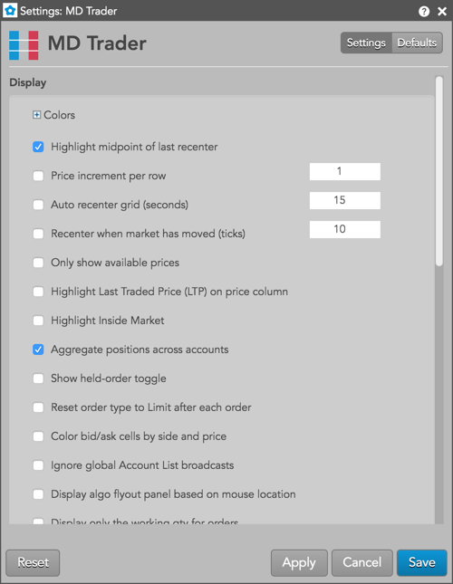
In the Settings: MD Trader screen, configure the following settings:
Click Apply and Save.
Note: To make an MD Trader widget's settings the new defaults for subsequently opened MD Trader widgets, click Save as default before saving.
To set context menu options:
For a description of each setting, refer to MD Trader Reference.
If you frequently use one or more order types, you can add buttons to an MD Trader widget that automatically set the order type or TIF in place of selecting it from the order type drop-down. You can add buttons for:
For example, if you frequently submit Stop Limit orders and TT Time Sliced orders and use a Good-Til-Cancel TIF, you can add custom action buttons as shown below.
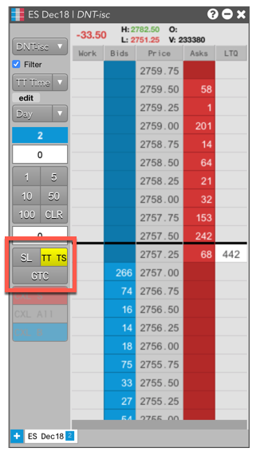
When you click a custom order type button, it automatically sets the order type and disables the drop-down. It remains active until you de-select the button or select a different order type, so you can quickly place multiple orders without having to select the order type.
Adding a TIF button lets you quickly set the time-in-force instead of selecting one from the drop-down.
To add a custom action button:
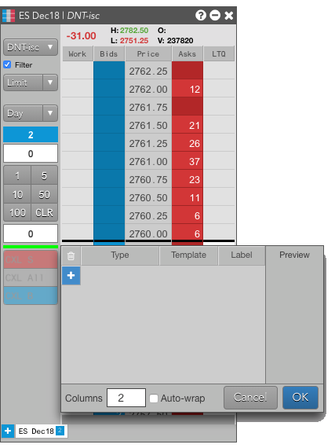
| Button | Description |
|---|---|
| + | Adds a new custom button. |
| X | Removes a new custom button. |
| Type | Selects the order type or TIF to associate with the button. |
| Template | For algos and TT order types, sets the pre-defined template settings. |
| Label | Sets the to display on the button. |
| Preview | Shows what the button will look like. Note the width of the Preview column matches the width of the Order Entry Panel when the dialog is opened. |
| Columns | Sets the number of columns for custom action buttons. |
| Auto-wrap | Sets whether to try to fit the custom action buttons in the specified number of columns. |
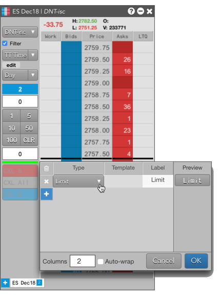
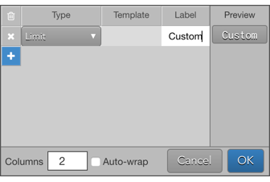
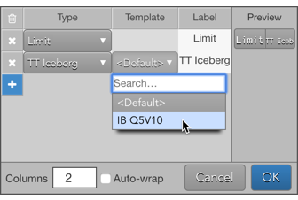
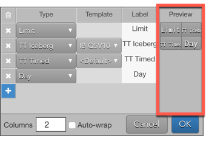
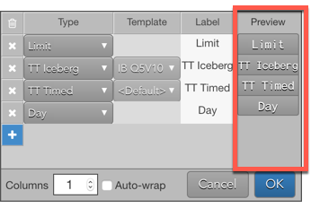
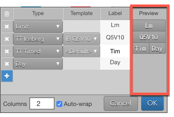
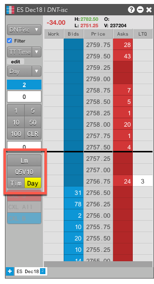
You can customize the row height in MD Trader by dragging the price ladder column with the left mouse click while holding down the Shift key.
To restore the default row height, right-click in MD Trader to open the Settings menu and click the Reset | Apply buttons.
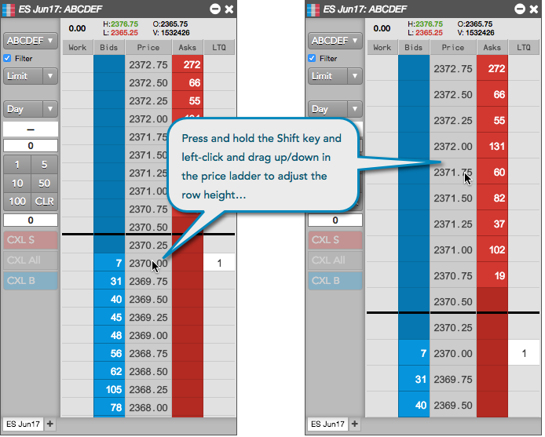
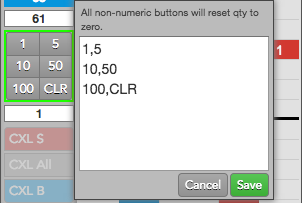
{% include custom2.html %}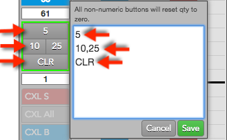
{% include custom3.html %}You can choose which columns you want to display from the MD Trader Settings, or you can use the context menu from the column headings. You can also set the bold font and text alignment for each column.
Note: If the widget level bold setting is enabled, the column-level bold option is not available.
To configure the columns you want to show:
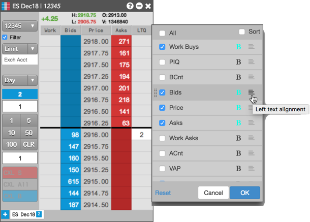
You can resize the Order Entry Panel in MD Trader by dragging the right edge of the panel with a left mouse drag. When you release the left mouse button, the price ladder resizes to accommodate the resized Order Entry Panel.
To restore the default Order Entry Panel width, right-click in MD Trader to open the Settings menu and click the Reset | Apply buttons.
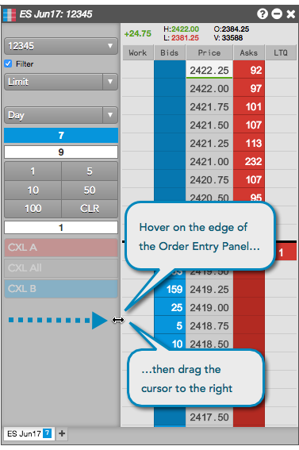
Using the mouse scroll wheel, you can scroll up/down in the MD Trader Order Entry Panel.
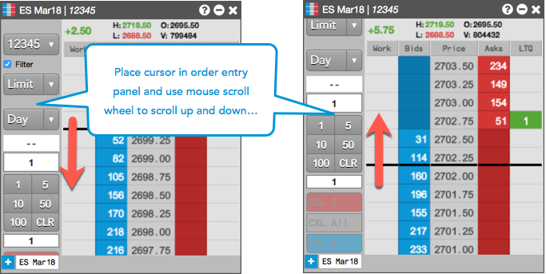
To show/hide the buttons and controls in the MD Trader Order Entry Panel, right-click in the panel and click Show/hide to select a button or control. Check the checkbox next to a button or control to show it, or uncheck to hide it.
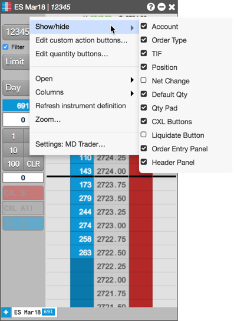
To adjust the font size of the MD Trader columns, press and hold the Shift+Ctrl keys while dragging the mouse up or down in the price ladder.
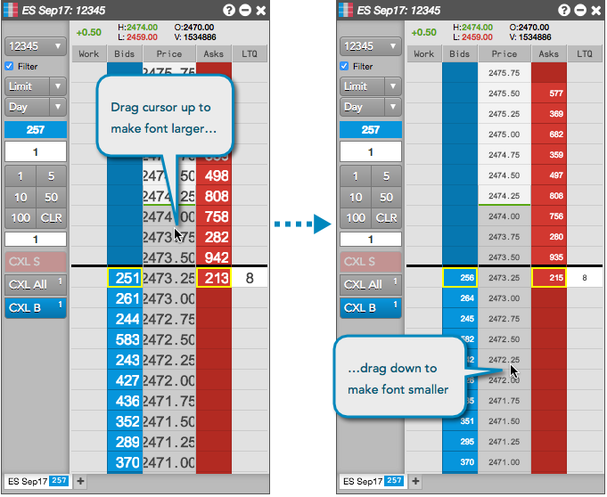
To highlight the inside market, right-click in MD Trader to select Settings: MD Trader and click the Highlight Inside Market setting. When this setting is checked, the best Bid and Ask price cells in the price column are highlighted based on the color settings for the widget. The default color is red for the best Ask price, and blue for the best Bid.
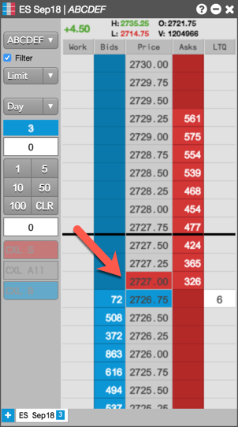
You can optionally separate the Work column into two separate columns for working Buy and Sell orders. To show the separate columns, right-click on the MD Trader column headers, select Edit columns..., and check the Work Asks column.
When this column is shown, the Work column (that normally displays both working Buy and Sell orders) displays only working bids and its header changes to WorkB. Working Sell orders are displayed separately in the WorkA column.
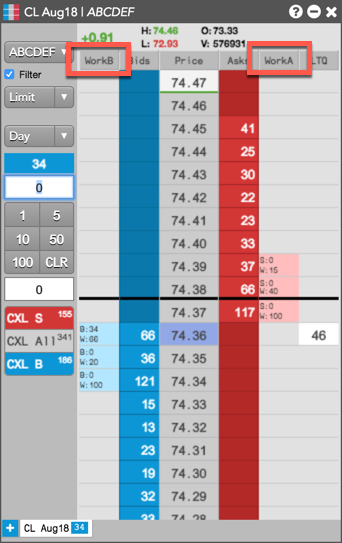
In MD Trader, you can move the cancel buttons and order quantity field from the side order entry panel to the bottom of the MD Trader grid. You can then hide the side panel to save screen space.
To move the buttons and order quantity, right-click and select Settings: MD Trader... to open the widget settings. In the Display section, scroll down to select the Show order qty and scroll buttons on bottom option and click Save.
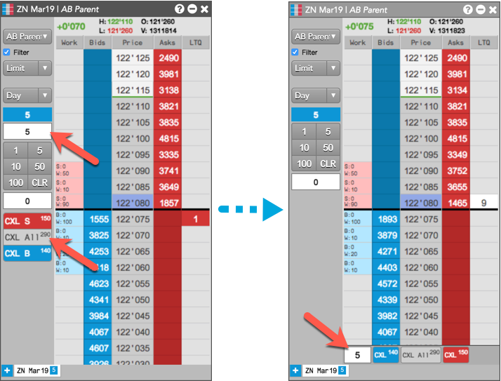
In the MD Trader price column, you can easily mark specific price cells to indicate levels of technical indicators, support/resistance levels, or reminders of important price points.
To mark a price level, use Alt + left-click on a price cell in the column. To set the color, use the Colors | Background (Marked Price) option in MD Trader Settings. The default color is yellow. Use "Alt + left-click" on a marked price cell to clear it.
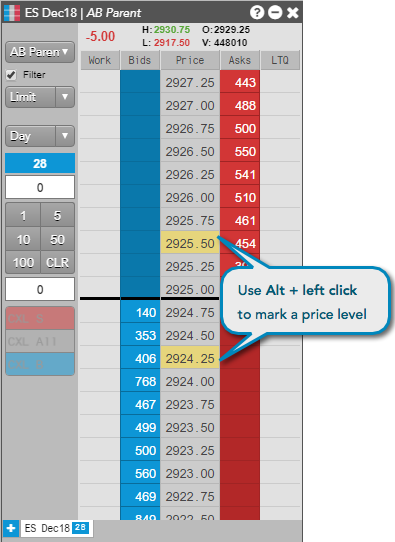